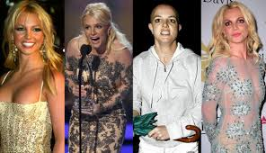

La violencia contra la mujer en la música
La música forma parte de nuestra vida diaria: nos acompaña, nos emociona y muchas veces influye en la manera en que entendemos el amor, las relaciones y el poder.
Sin embargo, detrás de muchas canciones y de la industria musical, existen formas de violencia simbólica y control hacia las mujeres.
La importancia de las letras
Muchas canciones populares presentan relaciones donde el hombre controla, vigila o castiga a la mujer, mientras estas conductas son mostradas como “amor verdadero”.
A esto se le conoce como romantización de la violencia: transformar conductas dañinas en algo aparentemente romántico o normal.
“Cuando repetimos constantemente mensajes violentos, terminamos normalizando esas conductas en la vida real.”
Ejemplos de canciones
| Canción | Artista | Análisis |
|---|---|---|
| Every Breath You Take | The Police | Aunque muchas personas la consideran romántica, la letra describe vigilancia obsesiva y acoso. |
| Mala Mujer | C. Tangana | Presenta a la mujer como culpable o manipuladora, reforzando estereotipos negativos. |
| Blurred Lines | Robin Thicke | La canción fue criticada por ignorar el consentimiento femenino, transmitiendo mensajes peligrosos. |
| Ingrata | Café Tacvba | La letra hace referencia a violencia extrema contra una mujer, normalizando el feminicidio como parte de la narrativa musical. |
Escuchar críticamente significa preguntarnos: ¿Qué mensaje transmite esta canción? y ¿qué conductas está normalizando?
La industria musical
La violencia dentro de la música no ocurre únicamente en las letras; también existe detrás de los escenarios, en contratos, oficinas y estudios de grabación.
Muchas artistas han denunciado control excesivo sobre su apariencia, su imagen pública y sus decisiones personales.
En una industria dominada históricamente por hombres, numerosas mujeres han sufrido acoso, discriminación y abuso de poder.
“A las mujeres en la música frecuentemente se les exige perfección física antes que talento.”
Britney Spears y el control sobre las artistas
Britney Spears es una de las figuras más importantes del pop contemporáneo, pero también se convirtió en símbolo de cómo la industria puede controlar la vida de una mujer famosa.
En 2008, una tutela legal entregó el control total de sus decisiones personales, económicas y profesionales a su padre.
Aunque Britney seguía trabajando y generando millones de dólares, perdió la capacidad de decidir sobre aspectos básicos de su propia vida.

Gracias al movimiento #FreeBritney, miles de personas comenzaron a cuestionar públicamente la tutela.
Finalmente, en 2021, Britney recuperó su libertad legal después de más de una década.
“La excusa de protegerla terminó convirtiéndose en una forma de control.”
Créditos: Wikipedia — Britney Spears
La violencia estética
A diferencia de muchos hombres dentro de la industria, a las mujeres se les exige mantener una apariencia física específica, juventud constante y estándares imposibles de perfección.
Esta presión estética no es solamente superficial; también funciona como una forma de control sobre la identidad femenina.
Cuando una artista es obligada a modificar su cuerpo, su ropa o su imagen para ser aceptada, se limita su libertad personal y artística.
El silencio cómplice
Durante décadas, productores y figuras poderosas dentro de la música fueron protegidos por la industria, incluso cuando existían denuncias de abuso.
Muchas jóvenes artistas enfrentaron ambientes donde el talento quedaba en segundo plano frente al poder, el dinero y la influencia.
Este sistema no solo dañó a las artistas, también afectó la libertad creativa dentro de la música.
“El silencio protege al agresor y desgasta la voz de quienes intentan denunciar.”
Reflexión final
La violencia contra la mujer en la música no es un caso aislado, sino una problemática histórica presente tanto en las canciones como en la estructura de la industria.
Como público, tenemos el poder de cuestionar aquello que consumimos y apoyar expresiones artísticas más libres y respetuosas.
El arte y la música tienen la capacidad de transformar la cultura; por eso es importante construir espacios donde el talento femenino no dependa del control, el abuso o el silencio.
“Reconocer la violencia en aquello que admiramos es el primer paso para transformarlo.”